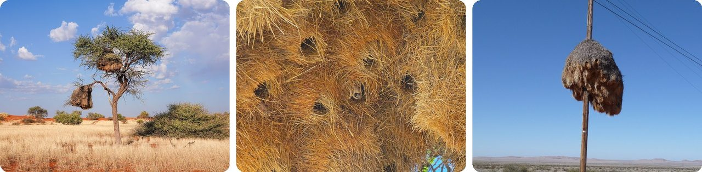
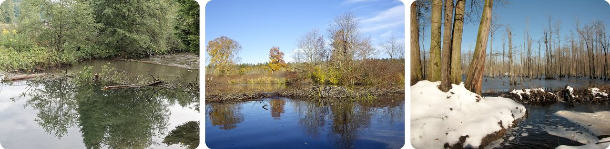
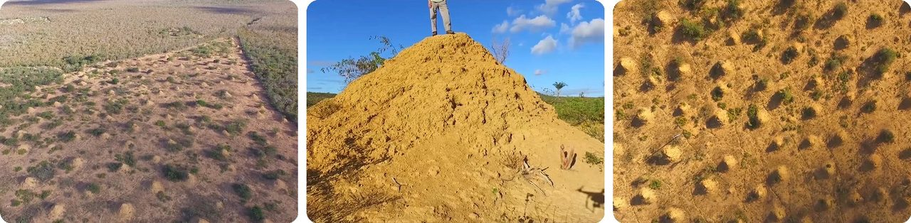
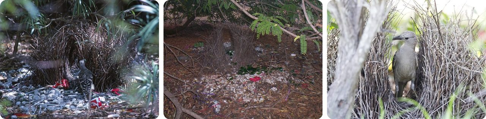
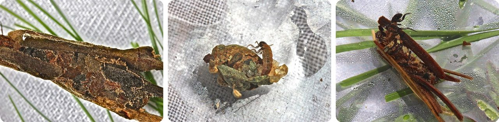
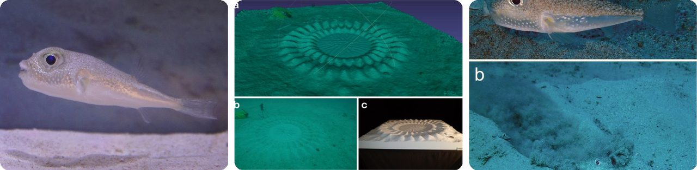
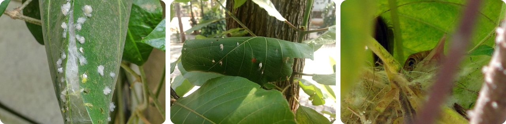
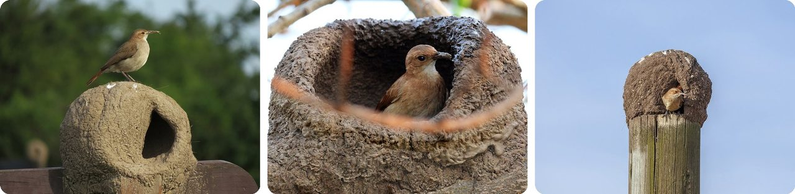
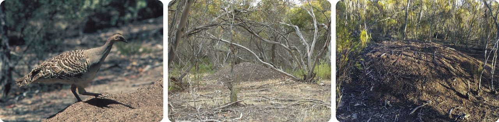
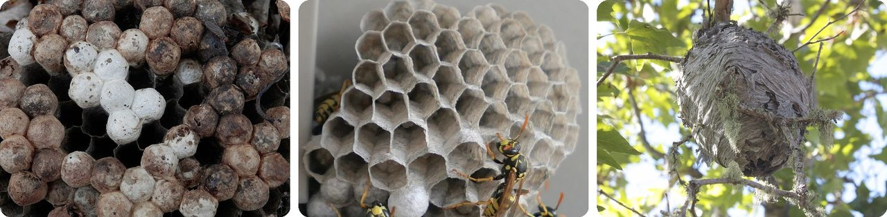

🌍 Top 10 Animal Architects
Oct 15, 2026
1. 🇳🇦 Sociable weavers build giant straw apartment buildings

In the Kalahari Desert of Namibia, South Africa and Botswana, little birds called sociable weavers, each weighing about 30 grams, about as much as a slice of bread, work together to build one huge nest out of dry grass. It hangs in a tree like a haystack, and it's among the biggest nests any bird builds.
Inside are many separate rooms, one for each pair of birds. A single nest can hold over 100 pairs, and families can keep living in the same one for generations, sometimes more than a century.
The thick straw works like insulation. Outside, the temperature can swing from chilly to very hot, but in the occupied rooms it changes by only about 7–8 °C. The middle rooms stay warm at night, and the outer ones give shade by day.
Think of it as a straw apartment block with built-in air conditioning.
2. 🇨🇦 A beaver dam in Canada is longer than seven football fields

Beavers build dams out of sticks, logs and mud to block a stream and make a pond. The pond keeps them safe from predators and holds their food through the winter.
Their homes, called lodges, have entrances underwater, so the pond has to be deep enough, roughly 0.6–0.9 meters, that ice won't block the door. Beavers start building by steering the stream to the side so the water pushes less hard on their work.
The biggest known beaver dam is in Wood Buffalo National Park in Alberta, Canada: 775 meters long, longer than seven football fields end to end. And they're quick: in Poland, beavers rebuilt a wrecked dam in about 8 hours.
Basically, a moat with a secret underwater front door.
3. 🇧🇷 Termites in Brazil built 200 million mounds you can see from above

In the dry forests of northeast Brazil, there are about 200 million termite mounds, spread over an area the size of Great Britain. Some are 3 meters tall, and they sit about 20 meters apart, like dots on a giant grid.
Underneath them runs a network of tunnels. Digging those tunnels meant moving about 10 cubic kilometers of soil, enough to build roughly 4,000 Great Pyramids of Giza.
The builders are termites about half an inch long. Scientists dated some mounds, and the oldest is at least 3,820 years old. They only noticed how big it all was when forest clearing exposed the land.
In other words, one of the biggest building projects on Earth was done by bugs.
4. 🇦🇺 Bowerbirds use an optical illusion to win a mate

In Australia, a male great bowerbird builds a "bower": two walls of sticks with a little path between them. It isn't a nest. It's a stage to impress females.
Outside it, he lays out white and green treasures: stones, bones, shells, and even bottle caps and bits of plastic. And here's the trick: he arranges them smallest to largest, which creates a forced-perspective illusion, the same trick that makes a person look tiny next to a "giant" photo prop.
Females stay and watch longer when the illusion is strong, and the males with the best illusions win more mates. The female then builds the real nest herself and raises the chicks alone.
It's an optical-illusion art gallery built to get a date.
5. 🪨 Caddisfly babies build armor from pebbles and twigs

Caddisflies are moth-like insects whose babies (larvae) live underwater in streams and ponds. To protect their soft bodies, many larvae make silk and use it to glue together a tube from gravel, sand, twigs or bits of plant. They live inside it and drag it along wherever they go.
Each species has its own style: some use neat little stones, others crisscrossed sticks. Fossils of these cases suggest caddisflies may have been building them since before the dinosaurs.
French artist Hubert Duprat took it further. He gave caddisfly larvae flakes of gold and tiny gems instead of pebbles, and they built themselves glittering jeweled cases.
Basically, a sleeping bag covered in pebbles that never comes off.
6. 🇯🇵 A 10 cm pufferfish carves giant circles in the seafloor

Off Amami Ōshima Island in southern Japan, divers kept finding perfect circles on the sandy seabed, about 2 meters wide, with ridges like the spokes of a wheel. Nobody knew what made them until the white-spotted pufferfish was discovered.
The builder is a male fish only about 10 cm long, so the circle is 20 times wider than he is. He swims along the bottom, flapping his fins to plow the ridges, decorates them with shells and coral, and smooths a maze-like pattern in the middle. It takes him 7 to 9 days.
A female comes to check his work. If she likes it, she lays her eggs in the center. He guards them until they hatch, then leaves the circle behind and never reuses it.
It's a crop circle, and the alien is a fish.
7. 🇮🇳 The tailorbird sews its nest from living leaves

The common tailorbird, a tiny songbird from India and Southeast Asia, really does sew. It pokes holes along the edges of a big leaf and stitches them together with plant fiber or spider silk, making a pouch.
Inside the pouch it builds a soft cup for its eggs. The holes are so small that the leaf stays green and alive, so the nest blends in with the rest of the bush.
The bird is famous enough to appear in Rudyard Kipling's The Jungle Book as Darzee.
In other words, a bird with a needle and thread.
8. 🇦🇷 Argentina's national bird builds an oven out of mud

The rufous hornero, about 20 cm long, is the national bird of Argentina. It builds its nest out of mud, shaped like an old wood-fired oven: a round dome with a side door.
That's where its name comes from. Hornero comes from horno, the Spanish word for oven, and its scientific name Furnarius comes from the Latin word for oven too.
You'll find these clay domes across eastern South America on tree branches, posts, and even the window ledge of an office building.
It's a bird that builds its own pizza oven.
9. 🇦🇺 The malleefowl hatches its eggs in a compost heap

The malleefowl is an Australian bird about the size of a chicken. Instead of sitting on its eggs, the male digs a hole and rakes in leaves, sticks and bark from up to 50 meters around, piling them into a mound about 0.6 m high.
As the leaves rot, they give off heat, just like a garden compost pile. The eggs sit inside and warm up. Through the season, the male keeps adding soil to keep the temperature right. Hatching takes from 50 to almost 100 days.
Then the chick digs its own way out, eyes shut, takes a big breath, freezes for up to 20 minutes, and runs off into the bush alone. No parent ever looks after it.
Think of it as a rotting-leaf incubator.
10. 🐝 Paper wasps made paper long before people did

Paper wasps scrape tiny fibers off dead wood and plant stems. They chew them up and mix them with spit, which turns the fibers into a soft pulp.
Then they spread the pulp into thin walls that dry into gray or brown paper, very much like handmade paper. They build open combs with cells facing downward, shaped a bit like an upside-down umbrella. That's why some are called umbrella wasps.
There are about 1,100 kinds of true paper wasps around the world, and every one of them is a papermaker.
So the first paper factory had wings.
Fun fact
In the 1700s, French scientist René de Réaumur watched wasps chew wood into paper and wondered whether people could make paper the same way. Back then, paper was not made from wood, and some credit Réaumur's wasp-watching with sparking the switch. It still took over a century before factories made paper from wood pulp on a big scale. Lots of human inventions borrowed ideas from animals like this: next time, inventions copied from nature.
Photo credits (Wikimedia Commons)
- #1: 119 Sociable weaver nests on an Acacia tree in the Kalahari Desert of Namibia Photo by Giles Laurent.jpg by Giles Laurent, CC BY-SA 4.0
- #1: Sociable Weaver (Philetairus socius) in its nest (6537732583).jpg by Bernard DUPONT from FRANCE, CC BY-SA 2.0
- #1: Nest of the Sociable Weaver.jpg by Patrick Scales, CC BY 3.0
- #2: Bobrowa tama na Kamienicy w Lubomierzu, 20250913 0732 4476.jpg by Jakub Hałun, CC BY 4.0
- #2: Beaver Dam Bantam River 1.jpg by Versageek, CC BY-SA 4.0
- #2: Beaver Dam in Winter (flickr) by Gerry Dincher, CC BY-SA 2.0
- #3: Syntermes dirus mounds - 1 - (Martin and all, 2018).png by Stephen J. Martin, Roy R. Funch, Paul R. Hanson and Eun-Hye Yoo, CC BY-SA 4.0
- #3: Syntermes dirus mounds - 3 - (Martin and all, 2018).png by Stephen J. Martin, Roy R. Funch, Paul R. Hanson and Eun-Hye Yoo, CC BY-SA 4.0
- #3: Syntermes dirus mounds - 2 - (Martin and all, 2018).png by Stephen J. Martin, Roy R. Funch, Paul R. Hanson and Eun-Hye Yoo, CC BY-SA 4.0
- #4: Great bowerbird at bower James Cook University Townsville 1996 IMG 0055.jpg by John Robert McPherson, CC0
- #4: Great bowerbird bower, Horseshoe Bay, Bowen 101 0184.jpg by John Robert McPherson, CC0
- #4: Great bowerbird 1 (11722386055).jpg by Jim Bendon from Karratha, Australia, CC BY-SA 2.0
- #5: Northern case-maker caddisfly larva, genus Pycnopsyche (7004501660).jpg by Bob Henricks from Charlottesville, United States, CC BY-SA 2.0
- #5: Saddle-case case-maker caddisfly larva (7234728290).jpg by Bob Henricks from Charlottesville, United States, CC BY-SA 2.0
- #5: Northern case-maker caddisfly larva, Dicosmoecus gilvipes (14079370022).jpg by Bob Henricks from Charlottesville, United States, CC BY-SA 2.0
- #6: Torquigener albomaculosus.jpg by タウナギ, CC0
- #6: Mystery-circle-constructed-by-a-white-spotted-pufferfish-Torquigener-albomaculosus.png by Hiroshi Kawase, Yuki Kitajima, Daisuke Iwai, CC BY 4.0
- #6: The-white-spotted-pufferfish-Torquigener-albomaculosus-Lateral-view-of-a-male-a-and.png by Hiroshi Kawase, Yuki Kitajima, Daisuke Iwai, CC BY 4.0
- #7: Common Tailorbird nest (48203438807).jpg by Mike Prince from Bangalore, India, CC BY 2.0
- #7: Nest of tailorbird 2.jpg by Shyamal, CC BY-SA 3.0
- #7: Incubating Tailorbird inside the nest.jpg by Anton Croos, CC BY-SA 3.0
- #8: Hornero y su casa.jpg by Ezequiel Ignacio Vera, CC BY 4.0
- #8: Rufous hornero (Red ovenbird)(Furnarius rufus) and nest.JPG by Charles J. Sharp, CC BY-SA 4.0
- #8: Rufous hornero (Furnarius rufus) at nest Colonia.jpg by Charles J. Sharp, CC BY-SA 4.0
- #9: Malleefowl standing on mound - DPLA - 8c8cf857f825bd4a11f7a5f125c38e91.jpg by Garst, Warren, 1922-2016, photographer, CC BY-SA 4.0
- #9: Malleefowl mound.jpg by Glen Fergus, CC BY-SA 2.5
- #9: Active Malleefowl Mound - Little Desert NP - Victoria_IMG_1567 (flickr) by fveronesi1, CC BY-SA 2.0
- #10: Umbrella Paper Wasp (Polistes sp.) Nest - Guelph, Ontario 2013-11-06 (01).jpg by Ryan Hodnett, CC BY-SA 4.0
- #10: Paper wasp (Polistes dominulus) on nest end june.jpg by Xorx, CC BY-SA 4.0
- #10: closeup paper wasp nest (flickr) by minicooper93402, CC BY 2.0

_in_its_nest_(6537732583).jpg){kind=link}


.png){kind=link}
.png){kind=link}
.png){kind=link}


.jpg){kind=link}
.jpg){kind=link}
.jpg){kind=link}
.jpg){kind=link}


.jpg){kind=link}


(Furnarius_rufus)_and_nest.JPG){kind=link}
_at_nest_Colonia.jpg){kind=link}


_Nest_-_Guelph,_Ontario_2013-11-06_(01).jpg){kind=link}
_on_nest_end_june.jpg){kind=link}